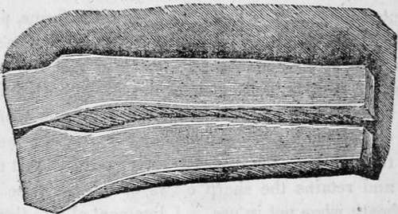

Chapter IV. Structure Of The Human Body Continued
Description
This section is from the book "Human Physiology For The Use Of Elementary Schools", by Charles Alfred Lee. Also available from Amazon: Human Physiology, for the Use of Elementary Schools.
Chapter IV. Structure Of The Human Body Continued
1. Another form of cellular structure is called fibrous, from the arrangement of its component parts, which consist of longitudinal fibres, plainly visible to the naked eye, placed parallel to each other and closely united. These fibres are sometimes so combined as to form a thin, smooth, dense, and strong membrane, like that which covers the external surface of bones, termed periosteum, or the internal surface of the skull, (dura mater.) At other times it forms a firm sheath, which dips down between the muscles, separating them from each other, or it may be spread over them, binding them firmly down in their places.
2. In the loins and along the back bone there is a strong binder of this kind, which greatly facilitates the motions of the body and powerfully contributes to the action of the muscles. Where this is weak, a belt round the waist is of considerable service, but in a well formed person it is a clumsy substitute of art for nature, and ultimately tends to weaken the back, for exercise strengthens and invigorates all parts of the frame, while artificial substitutes invariably weaken the parts they are supposed to strengthen.
3. It also constitutes the strong, tough, and flexible band, used for tying parts firmly together, termed ligaments, such as are found about the joints, connecting the bones ; and it also forms those white cords in which muscles terminate, called tendons, which serve to attach the muscles to the bones, thus acting as mechanical instruments of motion. This tissue forms a firm covering or envelope to the bones, muscles, tendons, cartilages, the eye, kidneys, spleen, and most of the organs of the body.
4. Every joint is enclosed by a firm fibrous bag, called the capsular ligament, the internal surface of which secretes a fluid, termed synovia, which lubricates the joints, and serves the same purpose that oil does in a piece of machinery. At the wrist and ankle, and along the fingers and toes, the ligaments form strong bandages to bind down the muscles and tendons, and enables them to act with greater precision and steadiness; otherwise when the muscle contracted, the tendons would start out like the string of a bow, and thus not only destroy the symmetry of the parts, but entirely prevent motion. When sprained by over exertion or accident, an artificial bandage becomes necessary ; we then find how superior the natural ligaments are to any artificial bandage that can be contrived.
5. Tendon Or Sinew
This well known structure is plainly perceptible at the wrist, on the back of the hand, at the heel, etc. They have a white, pearly lustre, possess great strength, but little elasticity. They are composed of bundles of parallel threads, bound together by transverse threads, and they vary both in figure and extent; some being cylindrical and tapering to the point of insertion, and in others forming broad expansions. So insensible are tendons, that when ruptured, as the tendon of Achilles at the heel, not the slightest pain is felt, but the person feels that he has received a smart blow, or that a part of the floor has given way under him.
6. Where force is to be exerted upon some distinct point, it is transmitted along a tendon, as forces in machinery are by ropes. When a tendon passes over a joint, a bone is formed sometimes where it crosses, as the knee pan in front of the knee joint; which is a bone placed directly in the centre of the tendon, and serves, to throw the force farther from the centre of motion, thereby increasing the lever, and consequently the effect. Similar bones are often found in the tendons of the feet.
7. Another primary tissue, or modification of cellular structure, is termed the cartilaginous. This seems to be a substance intermediate between membrane and bone. It is firm, smooth, highly elastic, of a pearly white colour, and except bone, the hardest part of the animal frame. It is destitute of red vessels, and neither nerves nor lymphatics have been discerned in it; though as it becomes highly sensible, like the fibrous tissue, by disease, it no doubt is supplied with nerves. It is placed at the ends of the bones, particularly about the joints, where by its smooth surface, it facilitates motion, and by its yielding nature, prevents the shock or jar which would be produced were the same kind and degree of motion effected by a rigid and inflexible substance. Where strength and flexibility are required to be united, we there find cartilage, as in the spinal column, between the ribs and breast bone, in the larynx, the ear, nose, etc.
Portions of cartilage seen in section.
8. By immersing cartilage in nitric acid and then in water for some little time, we find its intimate structure so unfolded, that we can perceive it to be composed of an infinite number of minute fibres, arranged perpendicularly like the pile of velvet. Thus we see that in the construction of the joints, millions and millions of springs of the most curious and excellent contrivance stand perpendicular to the direction of the force applied, bend to pressure, and on its removal, regain their form by their elasticity. When we stand in the erect posture, the number of minute but efficient springs on which the weight of the body rests, in the several joints of the back, in the hip, knee, and ankle joints, infinitely surpasses the powers of the human mind to calculate or even to imagine.
9. There is a peculiar tissue, allied to ligament in its texture, distinguished by a high degree of elasticity, fibrous structure, and tawny colour, and is hence often called elastic tissue. This structure is very conspicuous in the neck of those animals, which have to support a heavy load horizontally, at the the extremity of a long neck, as in the elephant, the deer, and our domestic cattle. Had their heads been supported merely by muscular action, as that is liable to fatigue and requires intervals of rest, as well as the exercise of. volition, the postures could not have been sustained for any length of time without pain and exhaustion. This tissue, which is liable to none of these objections, is accordingly substituted for muscular power, in fixing the forms, preserving the attitudes, and contributing to motion. The strong fibrous band, stretching along the back part of the neck to the head of these animals, enables them with perfect ease to support the head. It is the elasticity of this membrane which causes the head of these animals to be bent back after death, the action of the muscles having ceased. It also retracts and retains the sharp claws of the cat tribe within their sheath when not in use. A ligament of this tissue also retains the wings of birds in a bent position when they are in a state of rest.
Continue to:
- prev: Structure Of The Human Body. Part 4
- Table of Contents
- next: Structure Of The Human Body Continued. Part 2
Tags
humans, anatomy, skeleton, bones, physiology, organs, nerves, brain